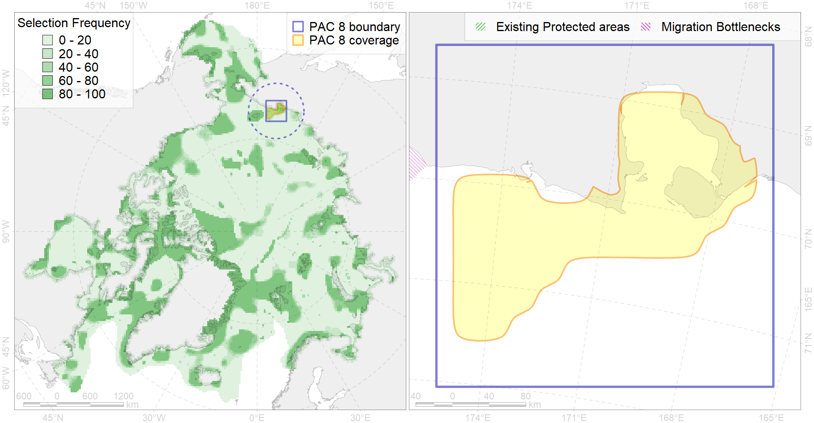

Region 8
Region 8
“ArcNet” scenario 33 achievement for region 8.
Use Accenter for advanced mode.

1
CFs inside of Region completely
5
CFs inside of Region at quarter
4
Complete-targets achievement by Region
7
Half-targets achievement by Region
| CF | Name | Target Achievement for Region | Proportion of Target Achievement in Region | Amount Proportion in Region |
|---|---|---|---|---|
| 7222 | Kelp forests of Chaunskaya Bay | 294.3% | 100.0% | 100.0% |
| 7107 | II.1.1.16. Chaunskaya Bay | 287.1% | 100.0% | 96.5% |
| 3102 | polynya Chukotka | 511.2% | 96.4% | 87.8% |
| 2062 | Ringed seal whelping areas in the East-Siberian Se | 385.7% | 82.7% | 63.6% |
| 7012 | East Siberian Sea Kolyma and Chaun refugia, enclaves of the boreal North Pacific fauna | 65.7% | 51.9% | 35.3% |
| 8035 | Salt marshes of the East-Siberian Sea LME | 40.8% | 38.7% | 15.1% |
| 6105 | 6105 Urilomviheckeri breeding colonies | 23.7% | 11.7% | 12.1% |
| 3040 | Marginal Ice Zone distribution in July in the East-Siberian Sea LME | 37.2% | 37.2% | 11.2% |
| 7044 | Western Chukchi transitional zone | 44.8% | 19.4% | 8.5% |
| 9030 | polar bear denning areas of LV (Laptev Sea) subpopulation | 11.4% | 11.3% | 7.2% |
| 2009 | Bearded seal whelping areas in the East-Siberian Sea | 41.6% | 27.7% | 6.4% |
| 6016 | Long-tailed duck (Clangula hyemalis) East Asian moulting&migration stopovers | 8.2% | 6.0% | 6.3% |
| 4026 | Feeding/migration area of the Chinook Salmon (Oncorhynchus tshawytscha) (F 26) | 80.1% | 8.7% | 5.9% |
| 4034 | Feeding area of the Taranetz’s Char (Salvelinus taranetzi) (F 31) | 14.4% | 8.6% | 5.7% |
| 4015 | Feeding area of the Broad whitefish (Coregonus nasus), American populations (F 19) | 13.9% | 11.9% | 5.5% |
| 6030 | Glaucous gull (Larus hyperboreus pallidissimus) breeding grounds | 37.2% | 6.3% | 5.3% |
| 4033 | Feeding area of the Dolly Varden (Salvelinus malma) (F 30) | 34.8% | 7.2% | 5.1% |
| 6011 | Brent goose (Branta bernicla nigricans) Asian breeding&moulting grounds | 24.4% | 9.0% | 4.9% |
| 4014 | Feeding area of the Siberian whitefish (Coregonus pidschian) (F 18) | 15.4% | 9.7% | 4.5% |
| 4021 | Feeding area of the Inconnu (Stenodus leucichthys nelma), Euro-Asian populations (F 22) | 10.1% | 8.5% | 4.0% |
| 3004 | Fast Ice distribution in the Chukchi Sea region | 36.9% | 5.6% | 3.7% |
| 4018 | Feeding area of the Vendace, Least cisco (Coregonus sardinellа), Euro-Asian populations (F 20) | 12.6% | 6.6% | 3.7% |
| 6066 | Common eider (Somateria mollissima v-nigrum) breeding&moulting grounds | 7.8% | 7.6% | 3.4% |
| 6100 | 6100 Risstridactylpollicarius breeding colonies | 4.1% | 4.1% | 3.3% |
| 3008 | Fast ice distribution in the Eastern part of the Laptev Sea and the East-Siberian Sea | 49.8% | 10.7% | 3.2% |
| 9004 | polar bear of the CS (Chukchi Sea) subpopulation distribution | 6.8% | 5.8% | 3.1% |
| 9022 | polar bear denning areas of CS (Chukchi Sea) subpopulation | 3.5% | 3.4% | 3.1% |
| 4052 | Range of the Fourhorn Sculpin (Myoxocephalus quadricornis) (F 45), American populations | 84.4% | 5.8% | 3.1% |
| 4024 | Distribution of the Chum Salmon (Oncorhynchus keta) (F24) | 38.0% | 4.5% | 2.8% |
| 7105 | II.1.1.14. East Siberian middle shelf | 38.8% | 10.8% | 2.8% |
| 6073 | King eider (Somateria spectabilis) Pacific moulting&migration stopovers | 4.7% | 4.1% | 2.6% |
| 4036 | Distribution of the Borisov’s Arctic cod (Arctogadus borisovi) (F33) | 16.0% | 7.0% | 2.5% |
| 4008 | Feeding / nursery area of the Arctic Cisco (Coregonus autumnalis), Eurasian populations (F 14) | 5.3% | 5.0% | 2.4% |
| 4077 | Fish zoogeography, Arctic Region, High-Arctic Shelf Province, Laptev – East-Siberian District (10D) | 15.0% | 7.9% | 2.3% |
| 5105 | Bowhead whale of the Bering-Chukchi-Beaufort population autumn distribution | 5.4% | 4.2% | 2.3% |
| 5052 | Gray whale summer feeding areas | 3.9% | 1.8% | 2.3% |
| 8028 | intertidal zone of the East-Siberian Sea LME | 6.8% | 2.4% | 2.2% |
| 6103 | 6103 Urilomviarrrbreeding colonies | 3.1% | 2.3% | 2.2% |
| 7080 | I.2.1.4. Shelf plains | 38.5% | 4.4% | 2.1% |
| 4070 | Local forms of the White-Sea herring (Clupea pallasii) (F8) | 5.7% | 3.2% | 1.8% |
| 4042 | Range of the Saffron cod (Eleginus gracilis) (F 36) | 23.7% | 3.5% | 1.7% |
| 4004 | Range of the Pacific Capelin (Mallotus villosus catervarius) (F11) | 48.1% | 3.5% | 1.7% |
| 1017 | Pacific Walrus haulouts | 1.7% | 1.7% | 1.5% |
| 7104 | II.1.1.13. East Siberian iInner shelf | 19.8% | 5.1% | 1.4% |
| 4006 | Feeding/nursery area of the Pacific rainbow smelt (Osmerus dentex) (F12) | 6.7% | 2.5% | 1.4% |
| 6079 | Thick-billed murre (Uria lomvia arrra) breeding colonies | 1.1% | 1.0% | 1.4% |
| 3030 | Marginal Ice Zone distribution in July in the Chukchi Sea LME | 3.3% | 2.8% | 1.2% |
| 7103 | II.1.1.12. East Siberian Shelf Coastal domain | 8.2% | 4.3% | 1.2% |
| 4023 | Feeding/migration area of the Pink Salmon (Oncorhynchus gorbuscha), native distribution (F23) | 16.4% | 2.5% | 1.1% |
| 9012 | polar bear of the LV (Laptev Sea) subpopulation distribution | 3.6% | 3.0% | 1.0% |
| 4058 | Range of the Arctic flounder (Liopsetta glacialis) (F48) | 14.6% | 1.9% | 1.0% |
| 6048 | Black-legged kittiwake (Rissa tridactyla tridactyla) breeding colonies | 1.4% | 1.0% | 0.9% |
| 6015 | Black guillemot (Cepphus grylle mandti) breeding grounds | 5.8% | 1.2% | 0.8% |
| 7077 | I.2.1.1. Coastal domain | 1.5% | 1.4% | 0.7% |
| 4037 | Distribution of the Glacial cod (Arctogadus glacialis) (F34) | 5.3% | 1.3% | 0.6% |
| 1018 | Pacific Walrus Summer-Autumn Distribution | 1.7% | 0.7% | 0.6% |
| 2061 | Ringed seal circumpolar foraging areas as predicted by MIZ distribution | 1.5% | 0.8% | 0.4% |
| 2045 | Ringed seal whelping areas in the Chukchi Sea | 1.0% | 0.6% | 0.4% |
| 2008 | Bearded seal whelping areas in the Chukchi Sea | 1.0% | 0.7% | 0.3% |
| 4041 | Range of the Polar Cod (Boreogadus saida) (F35) | 1.6% | 0.6% | 0.2% |
| 5112 | Arctic Cetaceans (beluga, bowhead, narwhal) winter habitats as predicterd by MIZ | 0.2% | 0.2% | 0.1% |